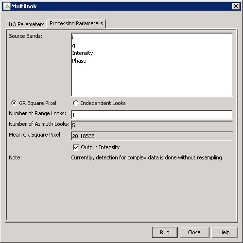

Multilook Operator
Generally, a SAR original image appears speckled with inherent speckle
noise.
To reduce this inherent speckled appearance, several images are
incoherently
combined as if they corresponded to different looks of the same scene.
This
processing is generally known as multilook processing. As a result
the multilooked image improves the image interpretability.
Additionally, multilook
processing can be used to produce an application product with nominal
image pixel size.
Multilook Method
There are two ways to implement the multilook processing:
- The multilooked images
can be produced by space-domain averaging of a single look image, either with
or without specific 2D kernels by convolution.
- The multilook images can be produced by frequency-domain method using the sub-spectral band width.
This operator implements the space-domain multilook method by
averaging a single look image with a small sliding window.
Selecting Range and Azimuth Looks
In selecting the number of range looks and the number of azimuth looks, user has two options:
- GR square pixel: the user specifies the number of range looks while the number
of azimuth looks is computed based on the ground range spacing and the azimuth
spacing. The window size is then determined by the number of range looks and the
number of azimuth looks. As a result, image with approximately square pixel spacing
on the ground is produced.
- Independent looks: the number of looks in range and azimuth can be selected
independently. The window size is then determined by the number of range looks
and the number of azimuth looks.
Parameters Used
The following parameters are used by the operator:
- Source Band: All bands (real or virtual) of the source product. User can
select one or more bands for producing multilooked images. If no bands are
selected, then by default all bands are selected.
- GR Square Pixel: If selected, the number of azimuth looks is
computed based on the user selected number of range looks, and range
and azimuth spacings are approximately the same in the multilooked
image.
- Independent
Looks: If selected, the number of range looks and the number of
azimuth looks are selected independently by the user.
- Number of Range Looks: The number of range looks.
- Number of Azimuth Looks: The number of azimuth looks.
- Mean GR Square Pixel: The average of the range and azimuth pixel spacings in the
multilooked image. It is computed based on the number of range looks, the number of
azimuth looks and the source image pixel spacings, and is available only when 'GR Square Pixel' is selected.
- Output
Intensity: This checkbox is for complex product only. If
not checked, any user selected bands (I, Q, intensity or phase) are
multilooked and output individually. If checked, user can only select
I/Q or intensity band and the output is multilooked intensity band.

Reference: Small D., Schubert A., Guide to ASAR Geocoding, RSL-ASAR-GC-AD, Issue 1.0, March 2008